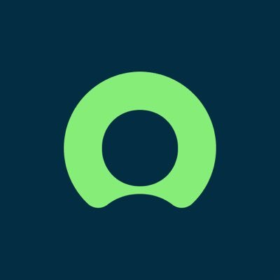

About Me
"Do what you can, with what you have, where you are."
Work Experiences
-
ServiceNow
Details
Tenure: June 2025 - September 2025
Position: Software Engineer Intern
Responsibilities: -
ServiceNow
Details
Tenure: June 2025 - September 2025
Position: Software Engineer Intern
Responsibilities: -
Northwestern Mutual
Details
Tenure: June 2025 - September 2025
Position: Software Engineer Intern
Responsibilities:
Skills
| Domain | Tech Stack |
|---|---|
| Programming: |
|
| Databases: |
|
| Web Development: |
|
| Version Control: |
|
| Cloud Providers: |
|
| DevOps: |
|
Personal Projects
-

C Preprocessor
Details
Developed a CPP in a Linux environment that processes C source files and removes comments from source code. Designed the program using a Deterministic Finite Automaton (DFA) by enumerating states. Automated the orchestration of tests with a Makefile.
-
Discord "Would You Rather" Bot
Details
Fun personal project for my Discord server for friends to enjoy. Developed and deployed a Discord bot to generate “would you rather” jokes sourced from the subreddit r/WouldYouRather. Utilized Discord and Reddit APIs.
-
IBD Web Application
Details
Developed and supported a full-stack web-application for the UCSD Boolean Lab. Simplified complex data visualizations for Inflammatory Bowel Disease. Collaborated with lab members and delivered the project following end-to-end agile practices. Enhanced accessibility and efficiency for graduate researchers by streamlining data interpretation.
-
Directory File Organizer
Details
Developed a program to recursively traverse directories and efficiently sort them based on file extensions. Used Python and libraries (os, shutil).
-
Fortune Telling Web Application
Details
Collaborated with 10 students to design and develop a Harry Potter themed fortune telling web application using Agile Development principles.
Knowledge Base
- Data Structures and Algorithms
- Cloud Engineering
- Web Development
- DevOps
Contact Me!
- How can I best contact William?
- Email me @ williamswe@gmail.com